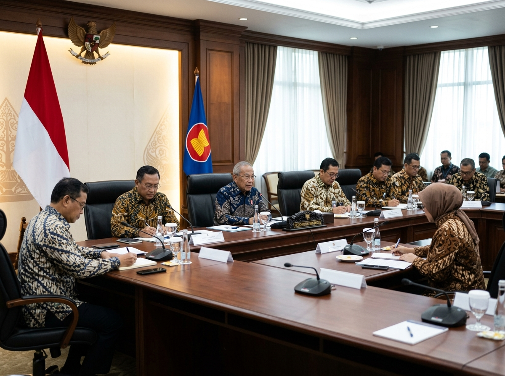
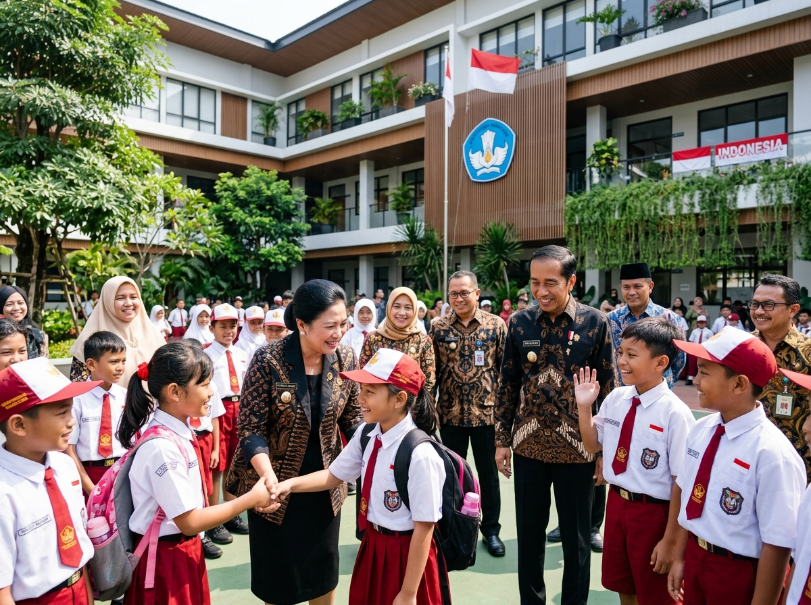
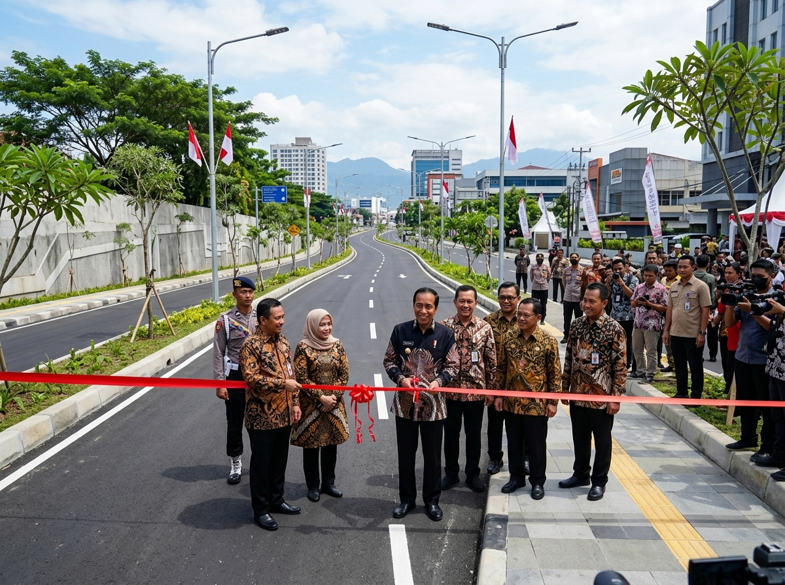
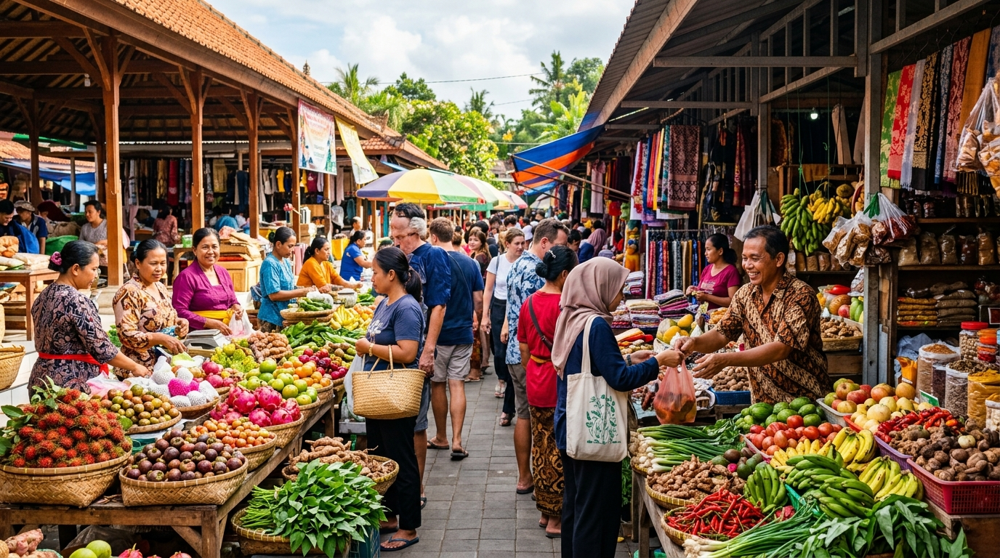
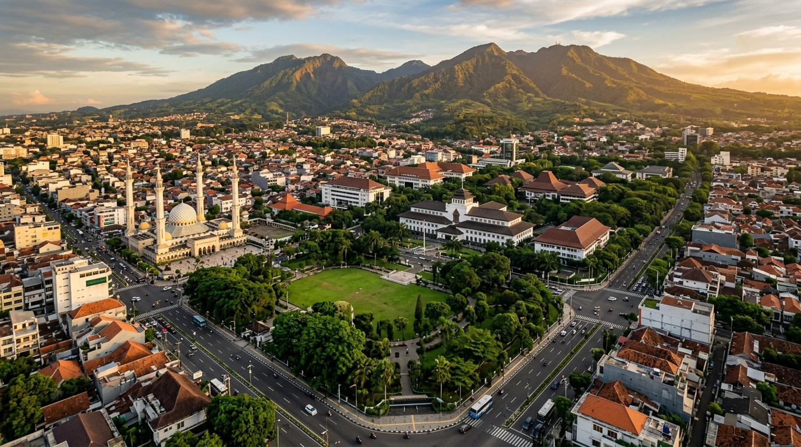
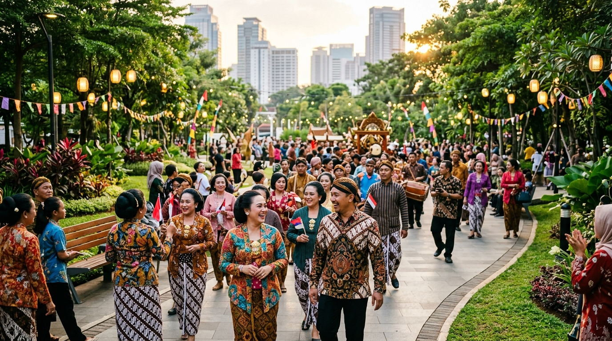

Musyawarah & Pemilihan Ketua RT 03/RW 01 Periode 2026-2031
Kegiatan musyawarah pemilihan ketua RT baru bersama seluruh warga RT 03/RW 01 Kelurahan Kramas yang berlangsung guyub, tertib, dan demokratis.
Kegiatan musyawarah pemilihan ketua RT baru bersama seluruh warga RT 03/RW 01 Kelurahan Kramas yang berlangsung guyub, tertib, dan demokratis.

Bupati Warga Tiga Satu memimpin rapat koordinasi bersama seluruh kepala dinas untuk membahas rencana percepatan infrastruktur prioritas guna mendorong pertumbuhan ekonomi lokal.

Pemerintah daerah meluncurkan program bantuan operasional tambahan guna memastikan seluruh anak usia sekolah mendapatkan akses pendidikan layak tanpa kendala biaya.

Jalan lingkar baru yang menghubungkan 3 kecamatan utama resmi difungsikan. Mobilitas hasil panen dan distribusi logistik warga kini semakin lancar dan efisien.

Ratusan pelaku usaha mikro dan kecil di Warga Tiga Satu berhasil membukukan transaksi miliaran rupiah dalam gelaran pameran ekonomi kreatif tahunan.

Transformasi digital layanan publik di daerah Warga Tiga Satu kembali mendapatkan apresiasi nasional dalam ajang Government Digital Award 2026.

Ribuan warga tumpah ruah menyaksikan parade kebudayaan tradisional yang menampilkan ragam pakaian adat, tarian kreasi, serta atraksi musik lokal.